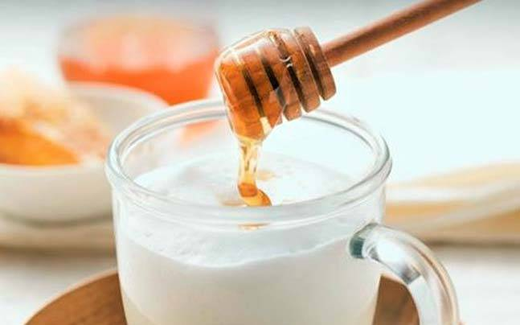
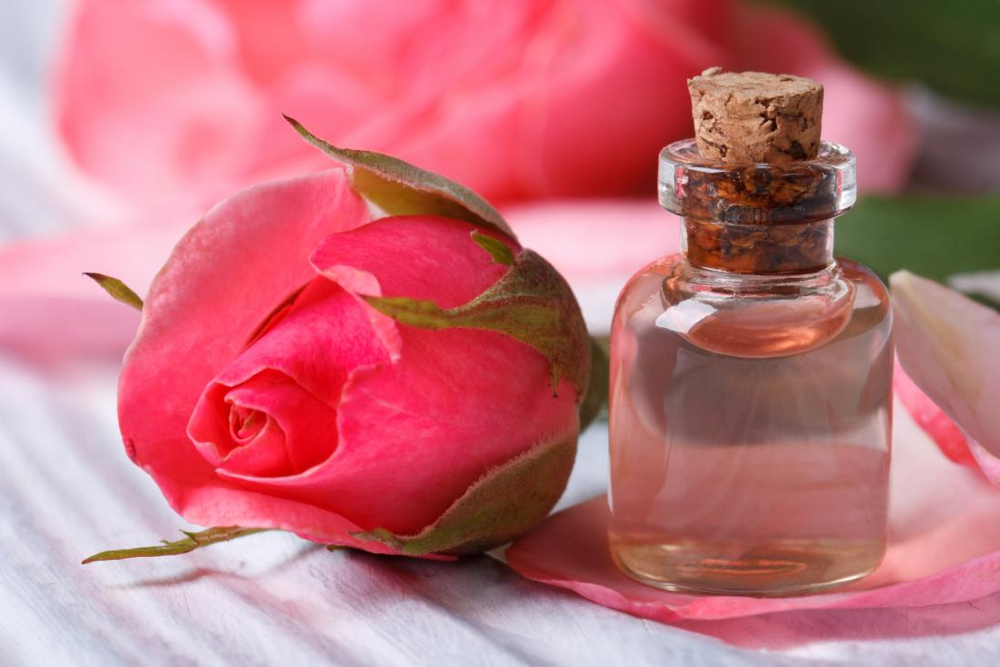
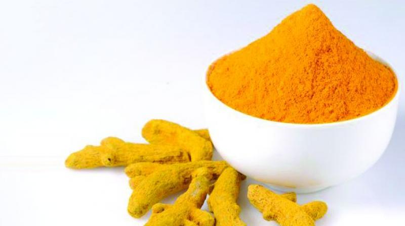
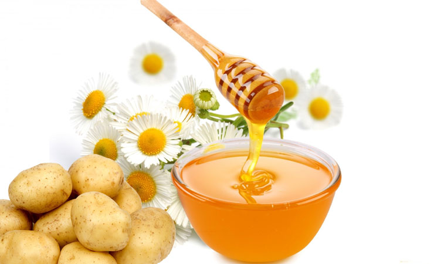

Milk and Honey
One of the best fairness tips for dry skin, since honey adds a wallop of moisture. You can substitute milk with malai (fresh cream).
- Rub into skin with gentle circular motions.
- Leave to dry and rinse off with tepid water after 15 minutes.
This is one of the best home remedies for glowing face. Repeat daily for best results.
Besan and Rose Water
- Mix together two tablespoon each of besan (gram flour) and rose water to make a thick paste.
- Apply all over your face and rub into skin in a gentle circular motion.
- Leave to dry and rinse off with warm water after 15 minutes.
- Leave to dry and rinse off with tepid water after 15 minutes.
The perfect DIY mask for how to get fair skin for oily skin. Use this once week for best results.
Home Made Fruit Pack

The answer to how to get fair skin naturally lies in your favorite fruits.
- Mash together a piece of ripe banana, papaya and mix with two teaspoons of cream.
- Add a few drops of lemon juice to the mix and apply all over face for 20 minutes.
- Rinse with warm water. Repeat this once week for best results.
Turmeric, Lemon Juice and Yoghurt
The perfect remedy about how to make face glow and fair at home for oily skins.
- Mix together one teaspoon of turmeric powder, two teaspoon of lemon juice and one teaspoon of yoghurt. Apply all over face for 15 minutes.
- Apply a little water on your face and gently massage into skin before rinsing with cool water.
This is the most effective natural remedies for glowing skin. Do this twice a week for best results.
Sandalwood Powder, Cucumber and Rose Water

- Mix together one tablespoon each of sandalwood powder, grated cucumber and rose water.
- Apply on your face and leave to dry for 15 minutes a paste.
Sandalwood powder lightens age spots, blemishes, and pigmentation. This is an excellent cooling face pack and works wonders on oily, sensitive skins as well. Repeat twice a week.
Potato, Honey And Rose Water
- Grate a small raw potato and mix with one teaspoon of honey and a few drops of rose water.
- Apply all over face and neck and leave on for 20 minutes before rinsing off with cool water.
You can safely use this potato pack on alternate days as a part of home remedies for fair skin. How to become fair naturally finally has an answer.